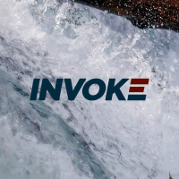
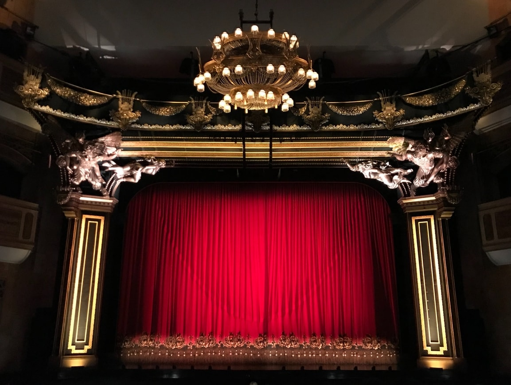
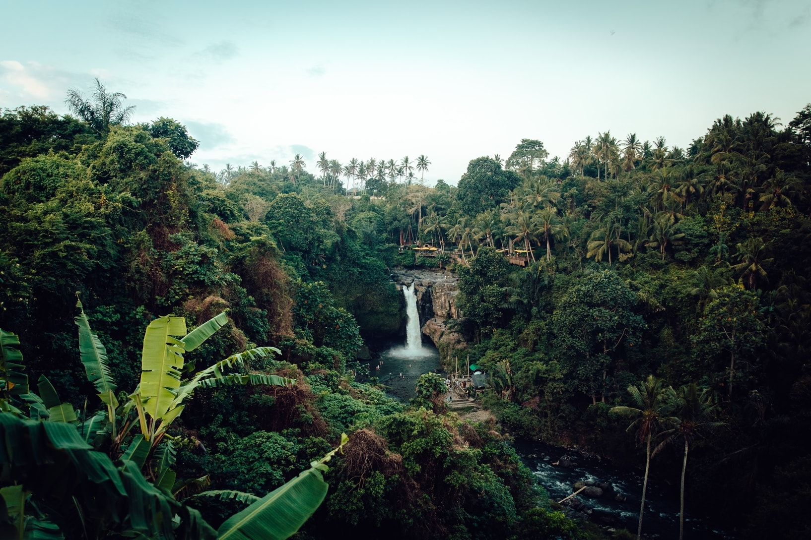
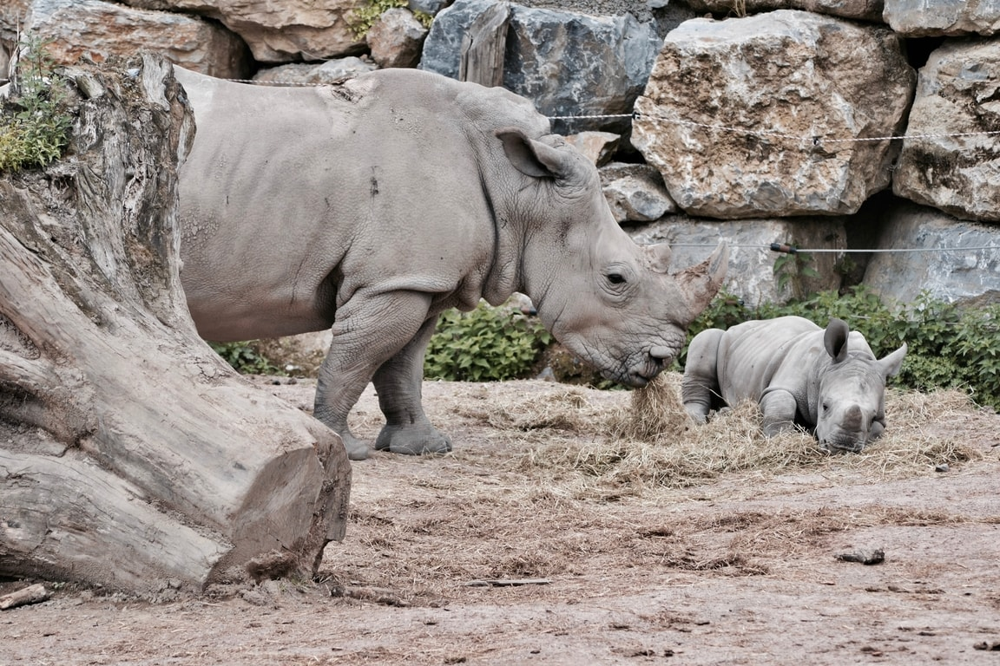
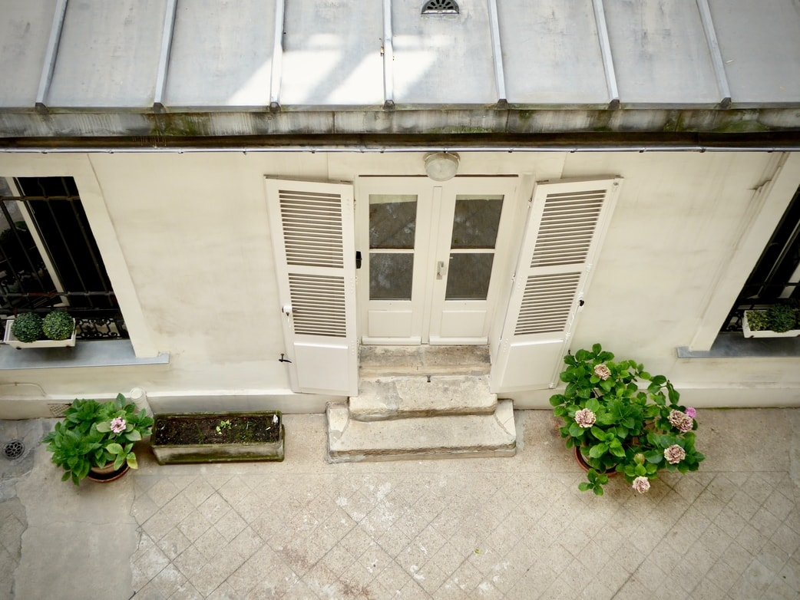
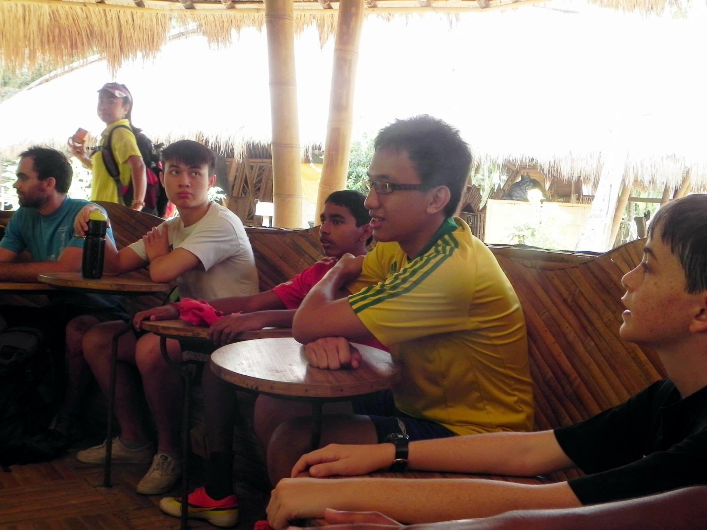

Welcome, friends
My name is Adam
I am from Shah Alam, Malaysia
I am a Web Designer
About

Hello my fellow readers. I have an interest in designing web pages. I started learning how to code when I was in my first year of university in 2015. From then, I took interest in learning and improving my coding skills. I recently learned how to design and develop web pages, and I am spending more hours on improving my programming skills in HTML, CSS and JavaScript. I have a passion for learning and improving because I like to use lessons to gain more knowledge and experience to strive to be more successful in my work. In my freetime, I like to spend some of my time with my family because I love socializing. For the rest of my freetime, I always go to the gym because exercising regularly makes me feel good when I am doing work.
Curriculum Vitae
Education
The University of Sheffield: September 2015 - June 2019
I attended this institution to study Mechanical Engineering as my course. Throughout my four years as an undergraduate, I have developed many technical skills that was required to complete my assigned projects. Other than that, I also have developed various soft skills to have better communication with team members to increase the productivity of our work.
Kolej Tuanku Ja'afar: October 2010 - June 2015
I attended this institution to complete my IGCSE and A-Level before attending a higher education institution. Being in a boarding school at the age of 14 has taught me to be very independent. The first skill that I had to develop was being organized, and this has helped me to prepare my schedule and taking care of my belongings.
Workplace
Invoke Malaysia: June 2020 - present
I am working with Invoke Malaysia as part of the Software Engineering Talent (SET) program. I will be trained in the bootcamp for a three month period. After the bootcamp, I would be assigned to company projects for at least two years.

Professional Projects
Individual Project: September 2018 - May 2019
I modelled the stresses taking place when a tram train is in contact with the rail using simplified railway calculations and finite element analysis (FEA). The two results calculated were then compared to determine the greatest stress that could occur in the rail.
Group Project: February 2018 - May 2018
I worked together with six other Mechanical students for a three month period to design and optimize the safety of pedestrian crossings. I used computer aided design (CAD) to make a new design for level crossings using a light system, which operates as a traffic signal.
Engineering You're Hired: February 2017 - February 2017
I worked in a group together with five other interdisciplinary students for a one week period to design mini robots to deconstruct structural beams to be taken down one at a time. I calculated the efficiency of each robot to perform its specified task to meet the deadline.
Global Engineering Challenge: January 2016 - February 2016
I worked in a group together with four other interdisciplinary students for a one week period to pitch an idea of preserving dried grains in a humid climate without refrigeration. I co-contributed to the optimization of the drying processing machine.
Professional Skills
- HTML
- CSS
- JavaScript
- MatLab
- SolidWorks
- ANSYS
- Microsoft Office usage
Personal Interest
Sheffield Malaysian Night: April 2017 - March 2018
I worked in a group with four other technical team members for a six month period to set up the technical systems that support the acting and dancing performances of the night. I helped to control the backdrop and sound systems during the performances.

Outward Bound School Lumut: November 2014 - December 2014
I joined the youth development programme as part of the academic year to develop our fundamental skills. During the one week period, I worked together in a small group to contribute carrying supplies and food while we went jungle trekking and sea kayaking.

International Understanding Day Canada: August 2014 - February 2015
I was one of the board of directors of the Interact Club and our main event of the year was IU day. My task was to set up the bazaar before the main event itself by displaying games and musical performances to promote the culture of the chosen country.
Volunteering Zoo Negara: February 2014
I volunteered for a one day trip to the national zoo to help clean and organize the section where the animals would be displayed to the public. I was assigned to the rhinoceros sector where I compiled its feces into a wheelbarrow using a shovel to discard it.

Volunteering Orphanage Home Nilai: January 2014
I volunteered for a one day trip to the orphanage centre with a group of volunteers to help distribute and serve food and beverages to the children. The volunteers also prepared a song to have a sing along performance with the children.

Green Camp Bali: October 2013
I joined a program to be in a sustainable camp for a one week period where I would learn on how to live in a more eco friendly environment. I worked in a small group to design a tent using bamboo sticks and leaves to withstand heavy rain from penetrating.

Personal Hobbies
- Learning Languages
- Playing Sports
- Video Games
- Board Games
- Reading Books
- Cooking
- Gymming
- Travelling
- Volunteering
- Exploring
- Musical Instruments
- Mathematics
Contact
Please contact me at: